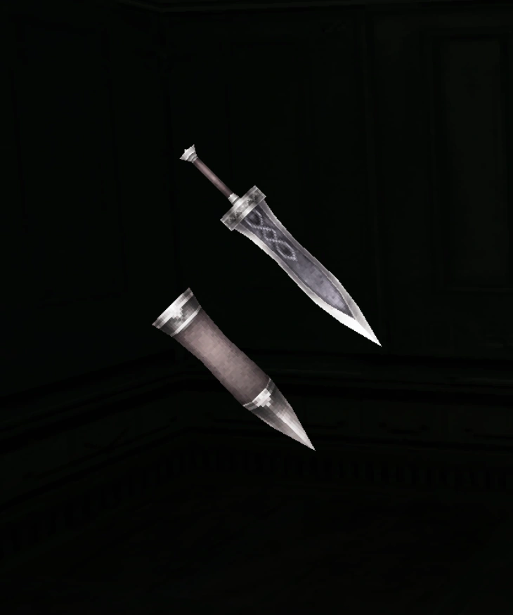

Gladius Description
Gladius

Stat/Effect:
| Base ATK | 25 |
| ASPD%: | 10 |
| Critical Rate | 3 |
| Base Stability % | 80 |
Obtained From:
[NPC] Blacksmith : Zaldo
Sofya City: Blacksmith
Recipe:
Fee: 100 Spina
Set: 1 pcs
Level: 15
Difficulty: 10
Materials: 25x Jagged Fang
25x Nicked Blade
50x Metal
Description: Small but Fast and pack a bite. it literally made from jagged fangs. if your the type of Swordman who want to make quick work of you enemy this sword for you.